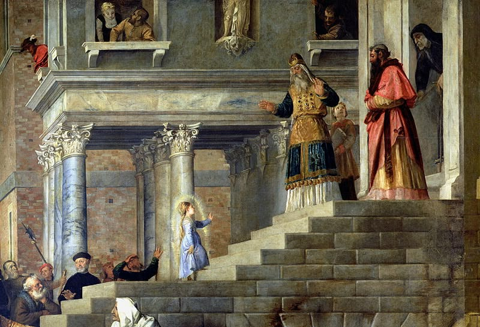

Começo essa reflexão com um trecho de uma homilia do Pocket Terço, que me inspirou a escrever:
“A vida espiritual não é fruto da autossuficiência, mas da dependência amorosa de Deus. Sem o auxílio divino, nossos jejuns, mortificações e esforços ascéticos tornam-se obras estéreis. Quando, porém, são sustentados pela graça, convertem-se em instrumentos eficazes de santificação. Reconheçamo-nos, portanto, como verdadeiros mendigos da graça, necessitados daquele que “segundo o seu beneplácito, realiza em nós o querer e o executar” (Fl 2,13). Somente apoiados na força de Deus poderemos perseverar no caminho que conduz à santidade.”
É interessante notar que a confiança na Divina Providência é um tema que não deveríamos ter dúvida, pois o próprio Deus nos fala em Mt 10, 30-33:
“Quanto a vós, até os cabelos da cabeça estão todos contados. Não tenhais medo! Vós valeis mais do que muitos pardais. Portanto, todo aquele que se declarar a meu favor diante dos homens, também eu me declararei em favor dele diante do meu Pai que está nos céus. Aquele, porém, que me negar diante dos homens, também eu o negarei diante do meu Pai que está nos céus”.
Essa passagem do Evangelho nos mostra abertamente que Deus nos ama com Amor paternal e que nada nos acontece sem sua divina permissão, que tudo contribui para nossa salvação. Deus quer nos salvar muito mais que nós queremos ser salvos. Por um lado, sei que Ele quer me salvar, graças a Deus Ele quer mais do que eu. Graças a Deus eu não preciso ter fé em mim e não preciso me salvar. Mas Ele espera de mim que ao menos eu coloque a ponta da linha na agulha e essa pontinha ínfima de parte que tenho na obra da minha salvação é fundamental, mas é Ele que cria e tece toda a roupa branca, alvejada e gloriosa que sou eu do jeito que Ele sonhou. Que eu seja assim um dia, que eu vista essa roupa de santidade, mas que primeiro eu coloque essa linha e mantenha ela na agulha, que Deus vai guiar. Que difícil manter essa linha. Que difícil ser essa agulha obediente, estou sempre ferindo as mãos de meu Senhor. Que vergonha, que tristeza ser esse poço de pecado. Deus ajude, só Tu podes me fazer ser perfeita. Minha mãe querida, ajudai-me.